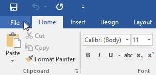
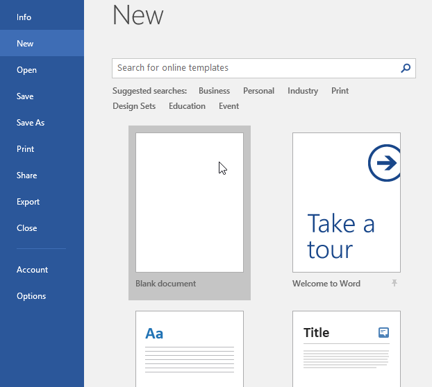
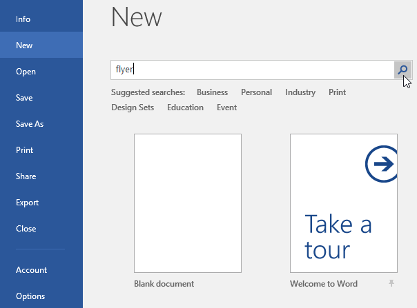
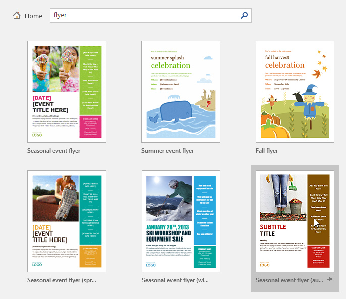
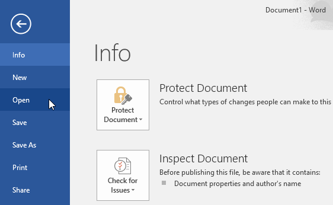
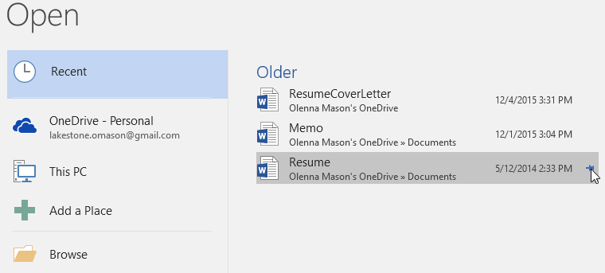
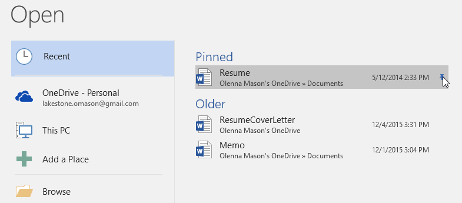
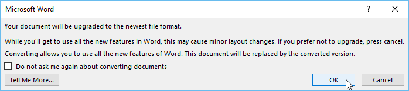

File Word disebut dokumen. Setiap kali Anda memulai proyek baru di Word, Anda harus membuat dokumen baru, yang bisa kosong atau dari templat. Anda juga perlu mengetahui cara membuka dokumen yang ada.
Tonton video di bawah ini untuk mempelajari selengkapnya tentang membuat dan membuka dokumen di Word.
Untuk membuat dokumen kosong baru:
Saat memulai proyek baru di Word, Anda sering ingin memulai dengan dokumen kosong baru.
Pilih tab File untuk mengakses tampilan Backstage.

Pilih New, lalu klik Blank document.

Sebuah dokumen kosong baru akan muncul.
Untuk membuat dokumen baru dari template:
Sebuah Template adalah dokumen pradesain dapat Anda gunakan untuk membuat dokumen baru dengan cepat. Template sering kali menyertakan pemformatan dan desain khusus, sehingga dapat menghemat banyak waktu dan tenaga saat memulai proyek baru.
Klik tab File untuk mengakses tampilan Backstage, lalu pilih New.
Beberapa template akan muncul di bawah opsi Dokumen kosong. Anda juga dapat menggunakan bilah pencarian untuk menemukan sesuatu yang lebih spesifik. Dalam contoh kita, kita akan mencari template flyer.

Saat Anda menemukan sesuatu yang Anda sukai, pilih template untuk mempratinjaunya.

Sebuah pratinjau template akan muncul. Klik Buat untuk menggunakan template yang dipilih.
Sebuah dokumen baru akan muncul dengan template yang dipilih.
Anda juga dapat menelusuri template berdasarkan kategori setelah melakukan pencarian.

Untuk membuka dokumen yang ada:
Selain membuat dokumen baru, Anda sering harus membuka dokumen yang telah disimpan sebelumnya. Untuk mempelajari lebih lanjut tentang menyimpan dokumen, kunjungi pelajaran kami tentang Menyimpan dan Berbagi Dokumen.
Arahkan ke tampilan Backstage, lalu klik Open.

Pilih PC ini, lalu klik Browse. Anda juga dapat memilih OneDrive untuk membuka file yang disimpan di OneDrive Anda.

Kotak dialog Buka akan muncul. Cari dan pilih dokumen Anda, lalu klik Open.

Dokumen yang dipilih akan muncul.
Sebagian besar fitur di Microsoft Office, termasuk Word, ditujukan untuk menyimpan dan berbagi dokumen secara online. Ini dilakukan dengan OneDrive, yang merupakan ruang penyimpanan online untuk dokumen dan file Anda. Jika Anda ingin menggunakan OneDrive, pastikan Anda masuk ke Word dengan akun Microsoft Anda. Tinjau pelajaran kami tentang Memahami OneDrive untuk mempelajari lebih lanjut.
Untuk menyematkan dokumen:
Jika Anda sering bekerja dengan dokumen yang sama, Anda dapat menyematkannya ke tampilan Backstage untuk akses cepat.
Arahkan ke tampilan Backstage, klik Open, lalu pilih Recent.
Daftar dokumen yang baru saja diedit akan muncul. Arahkan mouse ke dokumen yang ingin Anda sematkan, lalu klik ikon pushpin.

Dokumen akan tetap berada di daftar Dokumen terbaru hingga pinnya dilepas. Untuk melepas pin dokumen, klik ikon pushpin lagi.

Mode Kompatibilitas
Terkadang Anda mungkin perlu bekerja dengan dokumen yang dibuat di versi Microsoft Word yang lebih lama, seperti Word 2010 atau Word 2007. Saat Anda membuka jenis dokumen ini, dokumen tersebut akan muncul dalam Mode Kompatibilitas.
Mode Kompatibilitas menonaktifkan fitur tertentu, jadi Anda hanya dapat mengakses perintah yang ditemukan dalam program yang digunakan untuk membuat dokumen. Misalnya, jika Anda membuka dokumen yang dibuat di Word 2007, Anda hanya dapat menggunakan tab dan perintah yang ditemukan di Word 2007.
Pada gambar di bawah, Anda dapat melihat bagaimana Mode Kompatibilitas dapat memengaruhi perintah mana yang tersedia. Karena dokumen di sebelah kiri dalam Mode Kompatibilitas, itu hanya memperlihatkan perintah yang tersedia di Word 2007.

Untuk keluar dari Mode Kompatibilitas, Anda harus mengonversi dokumen ke jenis versi saat ini. Namun, jika Anda berkolaborasi dengan orang lain yang hanya memiliki akses ke versi Word yang lebih lama, sebaiknya biarkan dokumen dalam Mode Kompatibilitas agar formatnya tidak berubah.
Anda dapat meninjau halaman dukungan ini dari Microsoft untuk mempelajari lebih lanjut tentang fitur mana yang dinonaktifkan dalam Mode Kompatibilitas.
Untuk mengonversi dokumen:
Jika Anda ingin mengakses fitur yang lebih baru, Anda dapat mengonversi dokumen ke format file saat ini.
Klik tab File untuk mengakses tampilan Backstage, lalu cari dan pilih perintah Convert.

Sebuah kotak dialog akan muncul. Klik OK untuk mengonfirmasi pemutakhiran file.

Dokumen akan dikonversi ke jenis file terbaru.
Mengonversi file dapat menyebabkan beberapa perubahan pada tata letak asli dokumen.
Tantangan!
Buka dokumen latihan kami.
Perhatikan bahwa dokumen terbuka dalam Mode Kompatibilitas. Konversikan ke format file saat ini. Jika kotak dialog muncul menanyakan apakah Anda ingin menutup dan membuka kembali file untuk melihat fitur baru, pilih Ya.
Dalam tampilan Backstage, sematkan file atau folder.